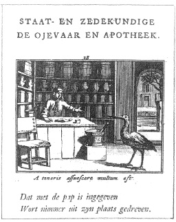

ŞEKİL 57. “Leylek ve Eczacı Masalı”
(Jan van Hoogstraten’in 1731 tarihli bir kitabından).50
Barok dönemi eczanelerinde ilaçlar üç kategoriye ayrılıyordu: “Galenica” (galenik preparatlar), “Chymica” (kimyasal preparatlar) ve “Preciosa” (ender ve değerli ilaçlar). Barok döneminde çok sayıda “ruhsal tedavi eczanesi” resmi ortaya çıkmıştır. Bunlar simgesel olarak Hıristiyanlık inancının avutucu ilaçlarını içermekteydi. 19. yüzyılda çocuklar için eczane konulu resimli kitaplar da ortaya çıkmıştır. Son olarak eczaneler, karikatürler halinde de sıkça işlenmiş ve 19. yüzyılda sanatsal açıdan en yüksek düzeyine erişmiştir. Hieronymus Brunschwig tarafından çok başarılı bir şekilde hazırlanan ve 1512 yılında Strasbourg’da basılan Destillierbuch über die zusammen gethane Ding (Latince basımı: Liber de arte distillandi de compositis ya da Großes Destillierbuch) (Damıtma Kitabı) adlı kitap, kimya konusunda basılmış kitapların ilklerinden biri ve kimya aleti resimlerini içeren ilk kitaptır. Bu nüshada, çoğu bitki, hayvan, damıtma aygıtı vb. olmak üzere eczacılıkla ilgili, kenar süslemeli 298 adet ahşap oyma resim yer almaktadır. Bu eser, her ne kadar 16. yüzyıla dek damıtma (destilasyon) işlemi biliniyor ve kullanılıyorduysa da damıtma işlemini açıklayan ilk büyük eserlerden biri, aynı zamanda bitkilerin ve onların uçucu yağlarının kimyasını betimleyen en eski eserdir. Eserde yer alan resimler çok gerçekçi değilse de Brunschwig bunun önemli olmadığını ve resmin, okuyucunun gözleri için bir ziyafet anlamına geldiğini, okuma yazma bilmeyenlere de yardımcı olduğunu öne sürmüştür. Buradaki resimler, daha önce yayımlanmış Le grant herbier en Francoys (Fransızca Şifalı Bitkiler Kitabı; başka bir adı Arbolayre) gibi çeşitli şifalı bitki kitaplarından ve Der Gart der Gesundheit ya da Hortus sanitatis (Sağlık Bahçesi) gibi eserlerin korsan baskılarından alıntılanmıştır. Le grant herbier, tarihi belirsiz, derleyicisi bilinmeyen anonim bir eser olup bundaki resimlerin bir bölümü, daha önce Der Gart der Gesundheit için hazırlanmış olanlar olup bir kısmı da, başka bir erken dönem şifalı bitkiler kitabı olan Circa instans’tan alınmadır. Bu eserin yayımlanmasının ardından büyük malikanelerin birer odası, öncelikle tıbbî amaçlı bitki preparatlarının hazırlandığı bir imbik atölyesine dönüştürülmeye çalışılmıştır. Başka bir damıtma kitabı, Walter Hermann Ryff’in (1500-1548) ölümünden sonra yayımlanan New gross Destillierbuch... (Yeni Büyük Damıtma Kitabı...) (Frankfurt/M, 1545) adlı kitabıdır. Tiryak, Eskiçağ’ın tıbbî maddeleri (“materia medica”) arasında Batı’da en önem verileni idi. Bu ünlü macunun hazırlanma ilkesi, Roma İmparatoru Neron’un özel hekimi Andromakhos’a dek geri uzanır ve Galenos’un tıbbî metinleri aracılığıyla kaybolmadan günümüze erişmiştir. Tiryak hazırlanmadan önce (ŞEKİL 58), onun bileşenlerinden her biri, hekimler tarafından sınandıktan sonra, ancak eczacı tarafından (resimde solda) karıştırılırdı. Masanın köşelerindeki flamalar, simgesel nesnelerdir. Bunlar Venedik aslanlarını göstermekte ve yüzyıllar boyu süregelerek 18. yüzyıl sonunda en çok değer verilen ve evrensel ilaç niteliğini kazanan Venedik tiryakının ününü vurgulamaktadır.49, 50